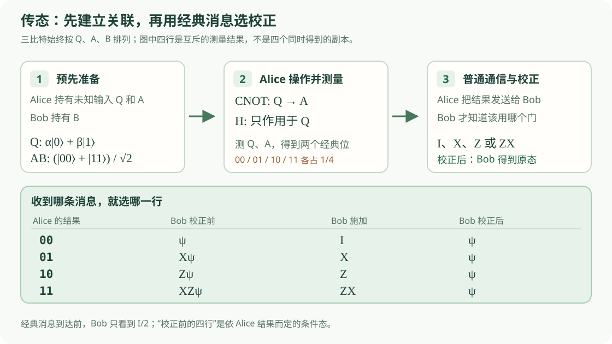

04｜量子门、电路与三种基础协议
前两章把一个量子比特写成两分量列向量，把两个量子比特写成四分量列向量。本章用这些向量读电路，再看三个用途：制备纠缠、把未知态传给远处的人，以及借共享纠缠传两位经典消息。若矩阵乘法已经生疏，可以先回看第 01 章的矩阵部分；本章所有关键电路都会给出可逐项核对的算例。
1. 电路怎样读
把电路想成一份操作顺序表：一条横线代表一个量子比特，沿线从左到右走就是时间向前。方框里的字母表示门；两个量子比特之间的竖线表示一个双比特门，不能把它当作两条线各自独立的门。测量符号给出经典结果，测量以后的线路通常不能再用“同一个封闭系统的酉矩阵”概括。
数学式却按矩阵乘法的习惯从右往左执行。例如先做 H、再做 Z，输入为 ∣0⟩ 时，写作
∣0⟩=[10]H21[11]=∣+⟩Z21[1−1]=∣−⟩.
整个过程写为 ZH∣0⟩，不是 HZ∣0⟩。检验顺序是否真的重要：若先 Z 后 H，Z∣0⟩=∣0⟩，最后得到 H∣0⟩=∣+⟩，与 ∣−⟩ 不同。一般的三步式 U3U2U1∣ψ⟩ 同理：先 U1，最后 U3。
本章两比特列向量固定按
∣00⟩=1000,∣01⟩=0100,∣10⟩=0010,∣11⟩=0001
排列。位串左边是第一个张量因子和高位。例如 ∣10⟩ 是“第一位为 1、第二位为 0”，不是测量软件恰好显示字符串 10 的保证。线路图若把第一条线标成 q0，也不能据此猜测软件输出字符串的左右顺序；使用软件时另查并注明端序。
理想的封闭系统量子门由酉矩阵 U 表示，满足 U†U=I。这条式子有两个直接后果：长度与内积不变，且 U−1=U†，所以理想门可以倒着做。例如 H2=I，连续做两次 H 就回到原态。若电路先 U 后 V，整体是 VU，撤销时先做 V†、再做 U†，即 (VU)−1=U†V†。测量、复位或丢弃系统会把结果写入记录或环境，单看留下的系统通常不能如此逆转；第 05 章用量子信道描述它们。
2. 常用门
先看门对什么态做了什么，再记名称。单比特的 X,Y,Z,H,S,T 都是 2×2 矩阵；CNOT、CZ、SWAP 作用于两比特，是 4×4 矩阵。第二章给出单比特门矩阵，这里挑与电路读法直接有关的作用。
表中“加相位”并非一定让计算基测量概率立即改变。例如 S∣+⟩=(∣0⟩+i∣1⟩)/2，直接量 0、1 仍各为 1/2；再接别的门让两条振幅相遇时，相位才可能变成可见的概率差。
受控门的名称也可以直译：控制位为 0 时不对目标做事；为 1 时执行指定门。CNOT 是“受控 X”。这一说法描述的是对计算基分量的作用；控制位若处于叠加态，必须把整个输入按线性拆开分别计算，不可想成门先偷偷测量控制位。
表中矩阵描述的是理想逻辑作用。实验里的门是有限时长的微波、激光、电压或光学控制过程；校准把控制波形调到尽量接近目标酉矩阵。弛豫、退相位、串扰和泄漏会使实际过程不再是一个完美酉门，而应由第 05 章的量子信道描述。因此，“线路上画了 CNOT”说明编译目标，不等于物理器件无误地执行了 CNOT。
3. 从乘积态制备 Bell 态
 打开原尺寸图 ↗
打开原尺寸图 ↗
读图时先跟随上方线路：H 只作用于 A，随后实心点是 CNOT 的控制端，下方带十字的圆圈是目标端。虚线只标记观察状态的时刻。图中第二阶段仍可写成 ∣+⟩A∣0⟩B，第三阶段才产生纠缠。先弄懂 CNOT 对任意两比特输入做什么，再回来看图。
以第一位为控制、第二位为目标，CNOT 的完整规则是
如果输入是任意四分量
∣v⟩=a∣00⟩+b∣01⟩+c∣10⟩+d∣11⟩=abcd,
按线性把四项分别送过 CNOT：a∣00⟩↦a∣00⟩，b∣01⟩↦b∣01⟩，c∣10⟩↦c∣11⟩，d∣11⟩↦d∣10⟩。所以
CNOTabcd=abdc.
例如把归一化态 (∣00⟩+2∣01⟩+3∣10⟩+4∣11⟩)/30 送入，输出为 (∣00⟩+2∣01⟩+4∣10⟩+3∣11⟩)/30；只交换了后两个振幅，平方和仍是 (1+4+16+9)/30=1。别把“控制位为 1 时翻转”误读为“测量控制位，若看到 1 才翻转”。
初态 ∣00⟩。先对第一个比特施加 H：
(H⊗I)∣00⟩=2∣00⟩+∣10⟩.
再以第一比特为控制、第二比特为目标施加 CNOT：
CNOT2∣00⟩+∣10⟩=2∣00⟩+∣11⟩=∣Φ+⟩.
线性很关键：CNOT 分别作用于两个分量，然后结果相加。
为什么第一步还不是纠缠？因为 (∣00⟩+∣10⟩)/2=(∣0⟩+∣1⟩)∣0⟩/2，仍拆得成两个单比特态的乘积。第二步后 (∣00⟩+∣11⟩)/2 则拆不开。CNOT 可以产生纠缠，不是碰到任何输入都会产生：CNOT∣00⟩=∣00⟩ 仍是乘积态；CNOT(∣+⟩∣+⟩)=∣+⟩∣+⟩ 也不变。产生纠缠取决于输入。
在上述基顺序和控制—目标约定下，
CNOT=1000010000010010.
矩阵第 1 至第 4 列分别是输入 ∣00⟩,∣01⟩,∣10⟩,∣11⟩ 的输出列向量，也就是 ∣00⟩,∣01⟩,∣11⟩,∣10⟩。写两比特门矩阵时，先写清输入基序和哪一位是控制位，才能判断矩阵是否正确。
马上核对。 CNOT(∣01⟩+∣11⟩)/2 是什么？前一项不变，后一项变成 ∣10⟩，故结果为 (∣01⟩+∣10⟩)/2。若对同一对比特再施加一次 CNOT，又回到输入，这也验证 CNOT2=I。
4. 不可克隆定理
看到 CNOT 的 ∣0⟩∣0⟩↦∣00⟩ 和 ∣1⟩∣0⟩↦∣11⟩，很容易以为第二个量子比特成了第一个的“复印件”。但把控制位换成 ∣+⟩=(∣0⟩+∣1⟩)/2，线性要求
CNOT(∣+⟩∣0⟩)=2∣00⟩+∣11⟩,
而真正的两份 ∣+⟩ 应是
∣+⟩∣+⟩=2∣00⟩+∣01⟩+∣10⟩+∣11⟩.
两个输出的非零分量个数都不同。因此 CNOT 能复制这两个已选定且正交的计算基态，却不是复制任意未知态的机器。
下面说明为何换一台更复杂的理想机器也不行。假设存在一个固定酉操作 U，能把任意未知态复制到同一个空白态 ∣0⟩：
U∣ψ⟩∣0⟩=∣ψ⟩∣ψ⟩.
对另一个候选态 ∣ϕ⟩ 也成立。先比较两种输入的内积：第二个比特都是 ∣0⟩，所以是 ⟨ϕ∣ψ⟩⟨0∣0⟩=⟨ϕ∣ψ⟩。输出是两份态，内积变成 ⟨ϕ∣ψ⟩2。酉变换保持内积；为避免同一物理态的整体相位写法干扰，至少必须保持其模，于是
∣⟨ϕ∣ψ⟩∣=∣⟨ϕ∣ψ⟩∣2.
令 c=⟨ϕ∣ψ⟩，便有 ∣c∣(1−∣c∣)=0，即 ∣c∣ 只能是 0 或 1。前者表示两态正交；后者表示两个 ket 只差全局相位，代表同一物理纯态。可是 ∣0⟩ 与 ∣+⟩ 的重叠为 1/2，既非 0 也非 1；固定的完美复制机不可能同时复制它们。这个具体反例已足以否定“复制任意未知态”。
如果复制机还有一份固定输入的辅助系统，且允许输出辅助态随输入变成 ∣Aψ⟩，两种输出的内积模会是 ∣c∣2∣⟨Aϕ∣Aψ⟩∣。两个归一化辅助态的重叠模至多为 1，于是它至多是 ∣c∣2；但输入内积模为 ∣c∣。对 0<∣c∣<1 仍不可能相等，辅助系统也不能绕过结论。
不可克隆不禁止根据已知制备说明重新制备同样的态：那是从说明制造另一个样本，而非拿未知样本做通用复制。近似克隆、成功率小于 1 的概率克隆和受限态集合的克隆也需要另行分析；定理禁止的是对任意未知态做确定、完美的通用复制。
5. 不可删除与复位不是一回事
“删除”在这里不是按一个按钮把系统清成 ∣0⟩。不可删除讨论更严格的特定任务：给定两份相同的任意未知态，想保留一份，同时把另一份连同所有辅助系统无痕变成与输入无关的固定状态。若只写系统的目标形式，可以表示为
∣ψ⟩∣ψ⟩∣A⟩⟶∣ψ⟩∣0⟩∣Aψ⟩.
其中 ∣A⟩ 是固定的初始辅助态，∣Aψ⟩ 是操作后的辅助态。允许 Aψ 随输入改变，就只是把信息移到别处；真正“无痕删除”还要求它不携带输入信息。封闭系统演化保持内积，不能令这些信息凭空消失。因此“不可删除”不等于“量子比特不能复位”。
可以用两种不同且不正交的候选态 ∣ψ⟩,∣ϕ⟩ 核对。记 c=⟨ϕ∣ψ⟩，并假设初始辅助态相同且归一化。两份输入的内积是 c2；若上面的变换由封闭系统的酉操作实现，两份输出的内积必须相同，所以
c2=c⟨Aϕ∣Aψ⟩.
当 0<∣c∣<1 时，可约去 c，得到 ⟨Aϕ∣Aψ⟩=c。辅助态至少保留了区分这两种输入的内积关系；若硬要它对所有输入都是同一个固定态，两辅助态的内积便为 1，与 0<∣c∣<1 矛盾。例如 ∣0⟩ 与 ∣+⟩ 的 c=1/2，辅助态也必须有相同的重叠。这个两态核对说明“固定辅助态”不可能；完整不可删除定理把要求推广到任意未知态集合。
例如 SWAP 可实现
∣ψ⟩S∣0⟩E⟼∣0⟩S∣ψ⟩E.
只观察系统 S，它确实被复位到 ∣0⟩；观察整体，原信息仍在环境 E。若直接丢弃 E，就无法仅凭 S 把原态找回，但不能因此说封闭的 S+E 整体把信息抹掉了。第 05 章会把这种“只看一部分”的复位写成合法量子信道。
6. 量子隐形传态
问题与资源。 Alice 手里有一个量子比特 Q，态为
∣ψ⟩Q=α∣0⟩+β∣1⟩,∣α∣2+∣β∣2=1.
她不知道 α,β，希望让 Bob 手里的量子比特具有这个态；传送的是态，不是构成器件的粒子。事前 Alice 与 Bob 各持有一半 Bell 态 ∣Φ+⟩AB=(∣00⟩+∣11⟩)/2。Alice 持有 Q,A，Bob 持有 B。全文三比特位串按 Q,A,B 排列。

打开原尺寸图 ↗
图先给路线，下面把四种分支逐项推出来。图中的 00 至 11 是一次实验中只会出现其中一个的 Alice 测量结果，不能理解为 Bob 同时收到四份态。
第一步：Alice 做两个门。 她先做 CNOTQ→A，再只对 Q 做 H。矩阵式从右往左写，恰与此顺序一致：
∣Ω⟩QAB=(HQ⊗IA⊗IB)(CNOTQ→A⊗IB)(∣ψ⟩Q∣Φ+⟩AB).
不用背最后的传态恒等式，可以逐项展开。初态先有四个三比特分量：
∣ψ⟩Q∣Φ+⟩AB=21(α∣000⟩+α∣011⟩+β∣100⟩+β∣111⟩).
其中 ∣100⟩ 的 Q=1,A=0，CNOT 会把 A 改成 1，即 ∣110⟩；∣111⟩ 则变成 ∣101⟩。Q=0 的两项不变，因此门后是
21(α∣000⟩+α∣011⟩+β∣110⟩+β∣101⟩).
再对第一位做 H。例如 α∣000⟩/2 变成 α(∣000⟩+∣100⟩)/2；而 β∣110⟩/2 变成 β(∣010⟩−∣110⟩)/2。剩下两项同法处理，并按前两位 QA 分组，得到
∣Ω⟩QAB=21[∣00⟩QA(α∣0⟩+β∣1⟩)B+∣01⟩QA(β∣0⟩+α∣1⟩)B+∣10⟩QA(α∣0⟩−β∣1⟩)B+∣11⟩QA(−β∣0⟩+α∣1⟩)B].
第二步：Alice 测量，得到两位经典数。 她在计算基分别测 Q,A；这也可描述为对门操作以前的 Q,A 做 Bell 基测量。某一行尚未归一化的 Bob 向量前面有 1/2。例如 QA=01 的结果概率是
p(01)=2β2+2α2=4∣α∣2+∣β∣2=41.
其他三行同样都是 1/4。知道结果为 01 后，要用 p(01)=1/2 去除该分支，Bob 的条件态才成为归一化的 β∣0⟩+α∣1⟩=X∣ψ⟩。这里“测量前分支带 1/2”与“测量后条件态长度为 1”是两个不同阶段，不能混写。
最后一行的 XZ 表示先 Z 后 X；校正用 ZX 表示先 X 后 Z。若把 ZX 写成 XZ，会多一个整体负号，测量统计相同，但教学计算最好固定表中的门序。
第三步：Alice 发送消息，Bob 校正。 Alice 只需用普通通信发送自己测到的 00、01、10 或 11。这两位数没有记录 α,β；它们仅告诉 Bob 该执行表中哪一行。比如取可手算的未知输入 ∣ψ⟩=(3∣0⟩+∣1⟩)/2。若 Alice 测得 01，Bob 此时是 (∣0⟩+3∣1⟩)/2；他施加 X，两系数换回去，得到原态 (3∣0⟩+∣1⟩)/2。这次 01 的概率仍为 1/4，与输入系数无关。
Bob 如果尚未收到结果，不能挑一行来校正。他手中是四种条件态各占 1/4 的非选择混合态。记 ρ=∣ψ⟩⟨ψ∣，则
ρB=41(ρ+XρX+ZρZ+XZρZX)=2I.
可以核对等号：ρ 与 ZρZ 的非对角项一正一负，XρX 与 XZρZX 也相互抵消；每个对角位置最后都是 2(∣α∣2+∣β∣2)/4=1/2。所以不管输入 ∣ψ⟩ 是什么，Bob 只测自己的比特都只见到相同的 I/2，不可能在经典消息到达前读出态或超光速收到信息。
一次成功传态消耗 1 对预共享纠缠，并发送 2 个经典位；Alice 的测量后不再留下原来那份未知态，因此也不违反不可克隆。若 Q 原先还与别的系统纠缠，还应检查这些关联也被转移。下面的进阶算例把这一要求单独展开；第一遍可在读完第 05 章后回看。
F71-04｜传态要保留联合关联，不能只还原一个局部概率表
问题。 引入一个不参与操作的参考比特 R，令 RQ 的初态为 ∣Φ+⟩RQ。Alice 仍持有 Q,A，Bob 持有 B；另外的资源为 ∣Φ+⟩AB。固定四因子基序为 R,Q,A,B，共 24=16 个复振幅。输入展开为
∣Ξ⟩RQAB=2∣0000⟩+∣0011⟩+∣1100⟩+∣1111⟩.
这里 Q 的局部态本来就是 I/2，没有独立的纯 ket。若只验证 Bob 也得到 I/2，甚至完全丢弃输入再随机重制备都能通过，不能证明量子信息已传递。
第一步：沿同一传态线路算全部分支。 令 m 为 Q 的记录、n 为 A 的记录，二者各取 0 或 1。对 Q→A 做 CNOT，再做 HQ；先前的二分量恒等式可以对 R=0、R=1 分别线性应用。于是每条 mn 分支，在剩下的 RB 基序中，未归一化 ket 是
∣wmn⟩RB=21(IR⊗XBnZBm)∣Φ+⟩RB.
例如 mn=01 给 (∣01⟩+∣10⟩)RB/(22)；mn=11 给 (∣01⟩−∣10⟩)RB/(22)。每条长度平方为 1/4，四条概率相加为 1，不能从归一化的分支反推其概率为 1。
第二步：按记录校正。 分支先除以 1/2 归一化。Bob 再执行 ZBmXBn，由于 ZmXnXnZm=I，四条都得到同一个 ∣Φ+⟩RB。参考 R 完全没有动，却从“与 Q 纠缠”变为“与 B 纠缠”。IBM 官方传态课程的参考系统推导给出一般关联保持的表述（访问 2026-10-13）；这里是按本书基序重算的四比特例子。
第三步：检查能够揭露错误的联合量。 若错误方案测 Q 的计算基，再让 Bob 按测得值重制备，输出是 ρRBwrong=(∣00⟩⟨00∣+∣11⟩⟨11∣)/2。它与正确传态的两边局部态都是 I/2，ZZ 相关也都是 1；但正确输出 XX 相关为 1，错误输出为 0。原因正是第 03 章的两条非对角相干项被错误方案删掉。
练习与答案。 尚未收到 mn、也未校正时，RB 的非选择态是什么？四条未归一化外积相加，恰是四个 Bell 投影各占 1/4，即 I4/4；Bob 本地仍为 I/2。这不是正确校正后的态，也不意味着可用经典消息到达前的关联超光速传讯。
运行 python3 codes/foundations/round71_checks.py --case 04。程序从 16 个振幅实施两门并切片全部分支，另检验 (3∣00⟩+i∣11⟩)/2 与乘积输入；固定输出与限制记录基序及联合矩阵。有限案例只用于抓实现错误；一般关联保持由协议对任意输入的线性恒等式与合法信道性质保证。
7. 超密编码
传态用“共享纠缠 + 两个经典位”转移一个未知量子态。超密编码换一个目标：用“共享纠缠 + 发送一个量子比特”传递两个经典位。两种协议的通信方向相同，所送的东西不同，不能把资源口径省掉。
Alice 与 Bob 先各持有 ∣Φ+⟩AB=(∣00⟩+∣11⟩)/2 的一半。Alice 想送的位串是 (b1,b0)，她只操作自己的第一位 A。先定义另外三个 Bell 态：
∣Φ−⟩=2∣00⟩−∣11⟩,∣Ψ+⟩=2∣01⟩+∣10⟩,∣Ψ−⟩=2∣01⟩−∣10⟩.
四个态彼此正交。例如 ⟨Φ+∣Φ−⟩=(1−1)/2=0；Φ 态与 Ψ 态占据的计算基项不重合，内积也为 0。Bob 收到 Alice 的比特后，便有可能用联合测量把它们分开。编码表中的算符全都只作用在 A 上：
以 11 为例，Alice 先把第一位翻转：
(XA⊗IB)∣Φ+⟩=2∣10⟩+∣01⟩.
随后 ZA 给第一位为 1 的 ∣10⟩ 加负号，得 (−∣10⟩+∣01⟩)/2=∣Ψ−⟩。如果操作次序颠倒，得到的是 −∣Ψ−⟩，只差全局相位；这里固定为“先 X 后 Z”，免得后续算式出现无缘由的负号。
Alice 接着把自己的一个量子比特送到 Bob 处。Bob 现在同时持有 A,B，可做一个具体的 Bell 测量：先做 CNOTA→B，再做 HA，最后分别按计算基测两位。把每行逐个算过，可见
例如 ∣Ψ−⟩=(∣01⟩−∣10⟩)/2 经 CNOT 后成为 (∣01⟩−∣11⟩)/2=∣−⟩A∣1⟩B；因为 H∣−⟩=∣1⟩，最后必然测得 11。其余三行同法，不需要记住一台神秘的“Bell 测量仪”。
资源账本必须完整：预共享 1 ebit（1 对最大纠缠量子比特），再发送 1 个量子比特，传递 2 个经典位。没有预共享纠缠，就不能把表格解释成“任意单个量子比特天然装两个可无误读出的经典位”。
8. 相位回踢
“相位回踢”听起来像有东西从目标位飞回控制位。实际发生的是：控制位的两个分支经历不同操作，而目标位碰巧是 U 的本征态，于是差异表现为控制位两分量之间的相对相位。
设 U 是作用在目标寄存器上的酉门，∣u⟩ 是它的归一化本征态，满足 U∣u⟩=eiθ∣u⟩。控制位先准备为 ∣+⟩。受控-U 作用于
2∣0⟩+∣1⟩⊗∣u⟩
得到
2∣0⟩∣u⟩+∣1⟩U∣u⟩=2∣0⟩+eiθ∣1⟩⊗∣u⟩.
看等式右边：两条控制分支的目标寄存器都为同一个 ∣u⟩，所以能够提取公共因子；目标没有携带“控制位是 0 还是 1”的区别。与此同时，控制位的 ∣1⟩ 分量相对 ∣0⟩ 多了 eiθ。这是相对相位，而不是整个联合态一起乘的、不可见的全局相位。
先用只有正负号的例子核对。 令 U=Z、目标位 ∣u⟩=∣1⟩；因为 Z∣1⟩=−∣1⟩，这里 eiθ=−1，可取 θ=π。受控 Z 后
∣+⟩C∣1⟩T=2∣0⟩C∣1⟩T+∣1⟩C∣1⟩T⟼2∣0⟩C∣1⟩T−∣1⟩C∣1⟩T=∣−⟩C∣1⟩T.
若立即在计算基测控制位，前后都是 0、1 各半，还看不到那个负号。再做一次 HC，由于 H∣−⟩=∣1⟩，控制位必得 1；如果目标本征值原为 +1，回踢后仍是 ∣+⟩C，再做 HC 必得 0。这里第二个 H 把相位差变成了可测的概率差。
本征态前提不能漏掉。若目标改为 ∣+⟩，而 U=Z，则 Z∣+⟩=∣−⟩，受控 Z 后是 (∣0⟩∣+⟩+∣1⟩∣−⟩)/2；两个分支的目标态不同，不能像上面那样提出一个共同的 ∣u⟩。相位估计使用本征态结构；Deutsch–Jozsa 和某些相位 oracle 则把函数值变成分支相位，具体电路要分别检查。
9. 通用性与近似
像搭积木一样，只挑少数几种门，能否拼出需要的任意计算？这叫门集的通用性。它不意味着“一种门一步完成所有计算”，也不意味着每个目标门都必须完全精确地拼出来。
一个原因是“有限个离散门”形成的有限长度序列只有可数多个，而单比特酉矩阵可随连续角度改变，目标有不可数多个。因此固定的离散门集不可能用有限序列精确写出所有单比特酉矩阵；我们追求的是给定容许误差后尽量逼近。任意单比特酉门配合一种能产生纠缠的两比特门，可对多比特酉运算构成通用资源；固定门集 {H,T,CNOT} 也可用于近似通用计算。
为什么表里还列 S？由 H,S,CNOT 等组成的一类门称为 Clifford 门；它们在稳定子电路中有较高效的经典模拟方法，单靠它们不是通用的。T 是一种 非 Clifford 门；把它加入门集，才有近似通用的能力。此处只需把“Clifford / 非 Clifford”理解为“仅前一类不够，后一类补足能力”的分类，不必先学稳定子形式。
进阶回看：物理成本。 实际硬件选择易于控制的原生门，再将目标电路拆成这些门。纠错后的某些容错方案中，T 门常依赖“魔法态蒸馏”：先制备许多有噪声的特殊辅助态，再经检测和筛选获得质量更高的辅助态。这可能很昂贵；只比较逻辑电路的总门数，并不足以比较实际运行成本。第 10–11 章进一步讨论容错与资源估计。
10. 常见误区
- CNOT 不是经典“复制门”：它只在目标为 ∣0⟩、控制为计算基态时呈现复制经典位的效果。
- CNOT 的“控制”不是先测量控制位；对叠加态应按线性逐项计算。
- 不可删除不禁止复位；复位把关于输入的信息转移到环境，而不是无痕消灭信息。
- 隐形传态传的是量子态，不是物体；两位经典消息不到，Bob 没有可用的输入态信息。
- 超密编码的“两位”是经典位，且依赖预共享纠缠。
- 相位回踢产生相对相位，但直接测计算基未必能看出；还需适当的干涉或换基步骤。
- 量子门图上的交叉线不总是 SWAP；应看是否有交换符号。
- 线路深度与门数不同：可并行门增加门数，却不一定增加深度。
11. 自检
先按正文公式独立试算，再对答案。第 1–3 题练读电路，第 4–6 题练传态与超密编码，第 7 题练相位回踢，第 8–9 题练概念边界。
- 写出第一位控制、第二位为目标的 CNOT 的 4×4 矩阵，明确基顺序，并说明矩阵第 3 列为何那样写。
- 从 ∣01⟩ 出发，先对第一比特做 H，再做 CNOT。写出每一步的态与测量
01、10 的概率。
- 把 (∣00⟩+2∣01⟩+3∣10⟩+4∣11⟩)/30 输入 CNOT。写出四分量输出，检查归一化，再做一次 CNOT 会怎样？
- 传态输入 ∣ψ⟩=(3∣0⟩+∣1⟩)/2；Alice 测得
10。Bob 在校正前后的归一化态分别是什么？该结果概率是多少？
- 不假定输入态系数的具体数值，解释 Bob 在没收到 Alice 消息时为何不能判断输入是 ∣0⟩ 还是 ∣1⟩。
- 超密编码中 Alice 想发送
11。从 ∣Φ+⟩ 开始，依次算出她施加 XA、ZA 后的态，以及 Bob 经 CNOT、HA 后必得的测量结果。
- 取受控 Z 的控制位为 ∣+⟩，目标位为 ∣1⟩。写出受控门后的态；为什么此时直接测控制位仍各半，而再做 H 后必得 1？
- 为什么隐形传态不违反不可克隆与不能超光速传讯？再用 SWAP 例子说明合法复位为何不违反不可删除。
- 先做 H 后做 Z 的整体矩阵写成 ZH 还是 HZ？计算它作用于 ∣0⟩ 的结果，并说明若交换门序会怎样。
答案见练习与答案：第 4 章。
新增诊断练习：可忽略的全局相位，为什么加控制后不能删
题目。 对单个目标比特，U=I 与 V=−I 只相差全局相位。控制比特为 ∣+⟩、目标为 ∣0⟩，分别执行受控 U 和受控 V，再对控制做 H 并测计算基。两个结果是否相同？
第一步：写四维门。 控制是左因子，基序是 00,01,10,11。定义
C(U)=∣0⟩⟨0∣⊗I+∣1⟩⟨1∣⊗U.
因此 C(I)=I4，而 C(−I)=diag(1,1,−1,−1)=Z⊗I。后一个负号只在控制为 1 的分支上出现，不是整个四维态的全局相位。
第二步：从输入到输出。 输入为 (∣00⟩+∣10⟩)/2。经过 C(I) 保持 ∣+⟩∣0⟩；经过 C(−I) 成为 ∣−⟩∣0⟩。再用 H，控制分别成为 ∣0⟩ 与 ∣1⟩，可被确定地区分。
一般地，C(eiϕU)=[diag(1,eiϕ)⊗I]C(U)。因此先把一个门的全局相位抹去、之后再加控制，会漏掉控制线上的相位门。编译器比较两个无控制门“相差全局相位”与比较两段受控线路，是两个不同的验证任务。Qiskit 的 ControlledGate 定义提供相应软件对象（核查 2026-09-26）；本题结论由上面的四维矩阵直接得出，不依赖软件的默认简化方式。
运行 python3 codes/foundations/diagnostic_lab.py --case 04，检查末态控制为 1 的概率依次为 0、1。拓展题：令 ϕ=π/2，应得到 sin2(ϕ/2)=1/2；先算控制末态振幅 (1−eiϕ)/2，再取模平方。
配套数值实验与展开答案
用八个复振幅直接执行传态线路，检查四个测量结果各占 1/4、四种校正全部还原输入，以及不知道结果时 Bob 仍为最大混态。
题目和逐步解答见基础实验册，本章程序编号为 04。可从代码说明进入独立脚本与保存的运行结果。所有模拟样本均明确标作合成数据，不是硬件实验。
参考起点
- IBM Quantum Learning, Circuits：电路从左到右的读法和门序。
- W. K. Wootters and W. H. Zurek, A single quantum cannot be cloned, Nature 299, 802–803 (1982)。
- A. K. Pati and S. L. Braunstein, Impossibility of deleting an unknown quantum state, Nature 404, 164–165 (2000)。
- C. H. Bennett et al., Teleporting an unknown quantum state via dual classical and EPR channels, Physical Review Letters 70, 1895 (1993)。
- IBM Quantum Learning, Quantum teleportation：电路约定、四种条件态与经典通信。
- IBM Quantum Learning, Superdense coding。
- IBM Quantum Learning, The phase-estimation procedure：相位回踢与 Hadamard 读出。
- J.-L. Brylinski and R. Brylinski, Universal quantum gates：任意单比特门与纠缠两比特门的通用性条件。